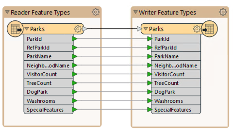
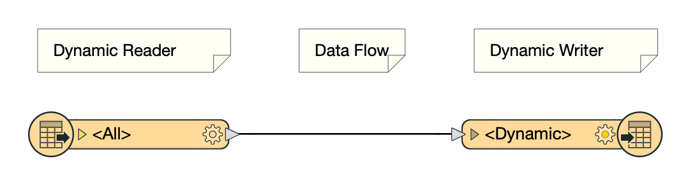
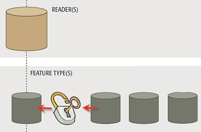
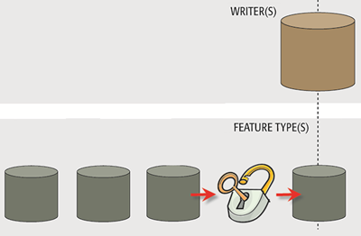

After completing this unit, you’ll be able to:
Dynamic workflows are a way to create "schema-less” workspaces.
Most workspaces covered elsewhere in FME training involve defining a static schema in the workspace. In other words, the source and destination schema reflect the structure of the source data (what we have) and the structure of the destination data the user requires (what we want).

A “traditional” static workspace like this is bound to a static schema.
When you press the Run button:
The two schemas are the same by default, but they don’t have to be. The writer schema can be manually edited to create different outputs. However, in a static workspace, that destination schema is still defined in the workspace itself.
In contrast, a dynamic workspace does not make assumptions about the source and/or destination schema. It’s an approach to workspace design that lets the workspace handle data regardless of the schema used.

When you press the Run button:
In other words, the schemas do not need to be defined beforehand. They are fetched dynamically at run time.
On the reader side of things, a dynamic workspace is very similar to using Merge Parameters; feature types are given free entry to a workspace, regardless of whether they are defined there.
Data is also read regardless of attributes or geometry type.

The writer side of a dynamic workspace mimics the reader part; feature types are written to the destination dataset, regardless of whether they are defined in the workspace.
Additionally, all attributes and geometries get written, regardless of whether they have been predefined in a writer feature type.

Dynamic workflows can be useful for cases like:
It’s important to understand the differences between generic and dynamic workspaces and when to use each of these tools.
This table is useful as a reference guide:
| I know the format | I don’t know the format | ||
| I know the feature types | Static | Generic + Static | I know the attributes |
| I don’t know the feature types | Fanout | Generic + Fanout | I know the attributes |
| I know the feature types | Dynamic | Generic + Dynamic | I don’t know the attributes |
| I don’t know the feature types | Dynamic | Generic + Dynamic | I don’t know the attributes |
For example, let’s assume you operate a data upload website. The data will be in a known structure (feature types) and with known attributes. However, you don’t know what format it will be. That needs a static schema (because that part is known) but with a generic reader.
If, on the other hand, the format is always the same, but the attributes are unknown, that will require a dynamic workspace.